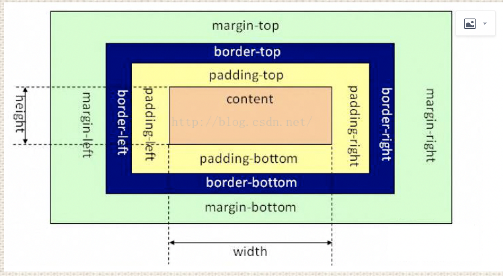

原文连接:https://www.cnblogs.com/zhen-prz/p/10618649.html
css
Cascading Style Sheet 层叠样式表
css 选择器分类
- 标签选择器
- id选择器
- class选择器
- 后代选择器（div a）
- 子代选择器（div > p）
- 相邻选择器（div + p）
- 通配符选择器（*）
- 属性选择器
- 伪类选择器
- 伪元素选择器::before{}
css3属性选择器
css3伪类选择器
- :hover
- :focus
- :after 在元素之后添加内容，也可以用来做清除浮动
- :before 在元素之前添加内容
- :enabled 选择器匹配每个已启用的元素（大多用在表单元素上）
- :disabled 控制表单控件的禁用状态
- :checked 单选框或复选框被选中
- ::selection 用户选中的区域
- :empty 一般用来隐藏内部什么都没有的元素
- :not(selecter)
- p:first-of-type
- p:last-of-type
- p:only-of-type
- p:nth-of-type(n)
- p:nth-last-of-type(n)
- :nth-child(n)
- :nth-last-child(n)
- p:only-child
伪类和伪元素区别
- 伪类值一种状态 比如:hover
- 伪元素是一个真实存在的元素，他可以有样式有内容
iconfont原理
- 利用编码让图标变为一个字符
- 引入字体
- 利用before伪元素向页面中插入一个文字
css定义的权重
- !important优先级最高，但也会被权重高的important所覆盖
- 行内样式总会覆盖外部样式表的任何样式（除了!important）
- 单独使用一个选择器的时候，不能跨等级使css规则生效
- 如果两个权重不同的选择器作用在同一元素上，权重值高的css规则生效
- 如果两个相同权重的选择器作用在同一元素上，以后面出现的选择器为最后规则
- 权重相同时，与元素距离近的选择器生效
一句话总结：!important > 行内样式 > ID选择器 > (类选择器|属性选择器|伪类选择器) > 元素选择器

浏览器解析CSS
简单地说，浏览器查找元素是通过找到特定元素后往前解析，这样做的目的就是加快CSS解析速度，从后往前，排除法
美化checkbox
- 让原本的勾选框隐藏
- input + label 背景图没选中
- input:checked + label 背景图选中
.checkbox input{
display: none;
}
.checkbox input + label{
background:url(./没选中.png) left center no-repeat;
background-size:20px 20px;
padding-left:20px;
}
.checkbox input:checked + label{
background-image:url(./选中.png);
}
<div class="checkbox">
<input id="handsome" type="checkbox" />
<label for="handsome">我很帅</label>
</div>
盒模型
盒模型有两种：IE怪异盒子模型、W3C标准盒子模型；
盒模型是由：content(内容)、padding(内边距)、border(边框)、margin(外边距)组成的；
标准盒子模型的宽高指的是content区的宽高，IE盒模型的宽高指的是content+padding+border的宽高；

CSS如何设置这两种盒模型
标准盒模型：
box-sizing:content-box;
IE盒模型：
box-sizing:border-box;
BFC
W3C对BFC的定义：
浮动元素和绝对定位元素，非块级盒子的块级容器（例如：inline-block、table-cells、table-captions），以及overflow值不为“visible”的块级盒子，都会为他们的内容创建新的BFC（块级格式上下文）。
BFC(Block formatting context)直译为“块级格式化上下文”。它是一个独立的渲染区域，只有Block-level box(块级框)参与，它规定了内部的 Block-level box 如何布局，并且与这个区域的外部毫不相干。
BFC的作用
- 利用BFC避免外边距折叠
-
清除内部浮动（撑开高度）
- 原理：触发父级的BFC属性，使下面的子级都处于父级的同一个BFC中
- 避免文字环绕
- 分属于不同的BFC时，可以阻止 margin 重叠
- 多列布局中使用BFC
如何生成BFC（脱离文档流，满足以下一个或多个条件即可）
- 根元素，即HTML元素（最大的一个BFC）
- float的值不为 none
- position的值为 absolute 或 fixed
- overflow的值不为 visible（默认值。内容不会修剪。会呈现在元素框之外）
- display的值为 inline-block、table-cell、table-caption
BFC的布局规则
- 内部的Box会在垂直方向上，一个接一个的放置
- 属于同一个BFC的两个相邻的Box的 margin 会发生重叠
- BFC就是页面上一个隔离的独立容器，容器里面的子元素不会影响到外面的元素。反之也是如此，文字环绕效果设置float
- BFC的区域不会与 float Box 重叠
- 计算BFC的高度，浮动元素也参与计算
非布局样式
- 字体、字重、颜色、大小、行高
- 背景、边框
- 滚动、换行
- 粗体、斜体、下划线
- 其他
行高的构成
- 行高是由 line-box 组成的
- line-box 是由一行里的 inline-box 组成
- inline-box 中最高的那个，或字体最大的那个决定行高
float
- 元素“浮动”
- 脱离文档流
- 不脱离文本流
- 位置尽量靠上，并靠左或靠右
对自己的影响
- 形成“块”（BFC）
- 这个块由自己布局，宽高由自己决定
对兄弟元素的影响
- 上面一般贴非浮动元素
- 靠边贴浮动元素或边
- 不影响其他块级元素的位置
- 影响其他块级元素文本
对父级元素的影响
- 从布局上“消失”
- 高度塌陷
清除浮动
浮动的元素布局时，不会占据父元素的布局空间，即父元素布局时不会去管浮动元素，浮动元素有可能超出父元素，对其他元素造成影响
方法一：在父级内容的最后添加一个空的div，给这个空div添加clear属性；clear:left(清除左浮动)、clear:right(清除右浮动)、clear:both(清除所有浮动)
方法二：给父级设置overflow:hidden;会触发BFC
方法三：使用伪元素
.container::after {
content: " ";
clear: both;
display: block;
visibility: hidden;
height: 0;
}
对 line-height 的理解
- line-height指一行字的高度，包含了字间距，实际上是下一行基线到上一行基线的距离
- 如果一个标签没有定义height属性，那么其最终表现的高度由line-height决定的
- 一个容器没有设置高度，那么撑开容器高度的是line-height而不是容器内的文字内容
- 把line-height值设置为height一样大小的值可以实现单行文字的垂直居中
line-height三种赋值方式区别（带单位、纯数字、百分比）
- 带单位：px是固定值，而em会参考父元素的font-size值计算自身的行高
- 纯数字：会把比例传递给后代。例如，父级行高为1.5，子元素字体为18px，则子元素行高为1.5 * 18 = 27px
- 百分比：将计算后的值传递给后代
滚动
- visible 滚动条隐藏，文本超出显示
- hidden 滚动条隐藏，文本超出不显示
- scroll 滚动条一直显示，不管文本的多少
- auto 滚动条自动隐藏
文字折行
- overflow-wrap（word-wrap）通用换行控制
- 是否保留单词
- word-break 针对多字节文本文字
- 中文句子也是单词
- white-space 空白处是否换行
单行文本溢出显示省略号
overflow:hidden;
text-overflow:ellipsis;
white-space:nowrap;
多行文本溢出显示省略号
overflow:hidden;
text-overflow:ellipsis;
display: -webkit-box;
-webkit-line-clamp: 3;
-webkit-box-orient: vertical;
display:none 和 visibility:hidden 的区别
相同：它们都让元素不可见
区别：
- display:none 会让元素消失，且不在保留位置；visibility:hidden 也是让元素消失，但是会保留原本的位置
- display:none 是非继承属性，子节点消失因为是从dom树上消失造成，所以通过修改子节点的属性无法显示；
visibility:hidden 是继承属性，子节点的消失由于继承了 hidden，通过设置 visibility:visible 可以让子节点显示 - 修改 display 会造成文本重排，而修改 visibility 会造成元素重绘
- 浏览器不会读取 display 的元素内容；但会读取 visibility 的元素内容
CSS单位
- px 绝对单位，
-
% 父元素宽度的比例。
- 如果对 html 元素设置 font-size 为百分比值，则是以浏览器默认字体大小16px为参照来计算，如62.5%即等于10px（16px * 62.5% = 10）
-
em 相对单位，不同的属性有不同的参照值
- 对于字体大小属性（font-size）来说，em 的计算方式是相对于父元素的字体大小
- border、width、height、margin、padding、line-height，在这些属性中，使用 em 单位的计算方式是参照该元素的 font-size ，1em 等于该元素设置的字体大小。同理如果该元素没有设置，就依次向父级元素查找，如果都没有，则使用浏览器的默认的字体大小
-
rem 相对与根元素 html 的 font-size 来计算，所以其参照物是固定的
- 好处：rem 只需要修改根元素 html 的 font-size 的值就可以修改全部，可谓牵一发而动全身
-
vw、vh、vmin、vmax 相对单位，是基于视窗大小（浏览器用来显示内容的区域大小）来计算的
- vw：基于视窗的宽度计算，1vw 等于视窗宽度的百分之一
- vh：基于视窗的高度计算，1vh 等于视窗高度的百分之一
- vmin：基于 vw 和 vh 中的最小值来计算，1vmin 等于最小值的百分之一
- vmax：基于 vw 和 vh 中的最大值来计算，1vmax 等于最大值的百分之一
transform变形
与transition、translate名字有点像，但是transition是做过渡动画，translate是做平移的
- none
- 定义不进行转换。
- matrix（n,n,n,n,n,n）
- 定义2D转换，使用六个值的矩阵
- translate(x,y)
- 从其当前位置移动，根据给定的left（x坐标）和top（y坐标）
- translate3d(x,y,z)
- 定义3D转换
- translateX(x)
- translateY(y)
- translateZ(z)
- scale(x[,y]?)
- 定义2D缩放转换
- scale3d(x,y,z)
- 定义3D缩放转换
- scaleX(x)
- scaleY(y)
- scaleZ(z)
- rotate(angle)
- 定义2D旋转，在参数中规定角度
- rotate3d(x,y,z,angle)
- 定义3D旋转
- rotateX(angle)
- rotateY(angle)
- rotateZ(angle)
- skew(x-angle,y-angle)
- 定义沿着 X 和 Y 轴的2D倾斜转换
- skewX(angle)
- skewY(angle)
- perspective(n)
- 为3D转换元素定义透视视图
CSS预处理器
- 嵌套
- 反映层级和约束
- 变量和计算
- 减少冗余代码
- extend 和 mixin
- 代码片段重用
- mixin 是直接把CSS代码每个地方重复写一份
- extend 是使用逗号分隔的选择器来为多个不同的地方使用同一段CSS
- 循环
- 适用于复杂有规律的样式
- import
- CSS模块化
CSS优化、提高性能的方法
- 多个CSS合并，尽量减少 http 的请求
- css 雪碧图
- 抽象提取公共样式，减少代码量
- 选择器优化嵌套，尽量避免层级过深（用 > 代替 空格）
- 属性值为0时，不加单位
- 压缩css代码
- 避免使用css表达式
- 它们要计算成千上万次并且可能会对你的页面性能造成影响
link 与 @import 的区别
- link 是 HTML 方式，@import 是 CSS方式
- link 最大限度支持并行下载，@import过多嵌套导致串行下载，出现FOUC（用户定义样式表加载之前浏览器使用默认样式显示文档，用户样式加载完成后在显示新的文档，造成页面闪烁）
- link 可以通过 rel="alternate stylesheet" 指定候选样式
- 浏览器对 link 支持早于@import，可以使用 @import 对老浏览器隐藏样式
- @import 必须在样式规则之前，可以在css文件中引用其他文件
- 总体来说，link 优于@import
display有哪些值？说明它们的作用

position有哪些值？
- relative 相对定位，相对于正常位置进行定位
- absolute 绝对定位，相对于值不为static的父级进行定位
- fixed 固定定位，相对于浏览器窗口进行定位
- static 默认值，没有定位
- inherit 规定从父元素继承 position 属性的值
CSS3新特性
- 新增选择器 p:nth-child(n){color: rgba(255, 0, 0, 0.75)}
- 弹性盒模型 display: flex;
- 多列布局 column-count: 5;
- 媒体查询 @media (max-width: 480px) {.box: {column-count: 1;}}
- 个性化字体 @font-face{font-family: BorderWeb; src:url(BORDERW0.eot);}
- 颜色透明度 color: rgba(255, 0, 0, 0.75);
- 圆角 border-radius: 5px;
- 渐变 background:linear-gradient(red, green, blue);
- 阴影 box-shadow:3px 3px 3px rgba(0, 64, 128, 0.3);
- 倒影 box-reflect: below 2px;
- 文字装饰 text-stroke-color: red;
- 文字溢出 text-overflow:ellipsis;
- 背景效果 background-size: 100px 100px;
- 边框效果 border-image:url(bt_blue.png) 0 10;
- 平滑过渡 transition: all .3s ease-in .1s;
- 动画 @keyframes anim-1 {50% {border-radius: 50%;}} animation: anim-1 1s;
- 变形 transform
- 旋转 transform: rotate(20deg);
- 倾斜 transform: skew(150deg, -10deg);
- 位移 transform: translate(20px, 20px);
- 缩放 transform: scale(.5);
用纯CSS创建一个三角形的原理是什么？
把border的其他三条边设为透明，这里要把border-width、border-style、border-color分开写
li 与 li 之间有看不见的空白间隔是什么原因引起的？有什么解决办法？(也称幽灵字符)
行框的排列会受到中间空白（回车\空格）等的影响，因为空格也属于字符, 这些空白也会被应用样式，占据空间，所以会有间隔，把字符大小设为 0，就没有空格了
什么是响应式设计？响应式设计的基本原理是什么？如何兼容低版本的 IE？
- 响应式设计就是网站能够兼容多个不同大小的终端，而不是为每个终端做一个特定的版本
- 基本原理是利用 CSS3 媒体查询，为不同尺寸的设备适配不同样式
- 对于低版本的 IE，可采用 JS 获取屏幕宽度，然后通过监听window.onresize 方法来实现兼容
box-sizing 常用的属性有哪些？分别有什么作用？
- box-sizing: content-box; // 默认的标准(W3C)盒模型元素效果
- box-sizing: border-box; // 触发怪异(IE)盒模型元素的效果
- box-sizing: inherit; // 继承父元素 box-sizing 属性的值
请列举几种隐藏元素的方法
- visibility: hidden; 这个属性只是简单的隐藏某个元素，但是元素占用的空间任然存在
- opacity: 0; CSS3 属性，设置 0 可以使一个元素完全透明
- position: absolute; 设置一个很大的 left 负值定位，使元素定位在可见区域之外
- display: none; 元素会变得不可见，并且不会再占用文档的空间。
- transform: scale(0); 将一个元素设置为缩放无限小，元素将不可见，元素原来所在的位置将被保留
-
HTML5 属性,效果和 display:none;相同，但这个属性用于记录一个元素的状态
- height: 0; 将元素高度设为 0 ，并消除边框
- filter: blur(0); CSS3 属性，将一个元素的模糊度设置为 0
rgba()和opacity的透明效果有什么不同？
- opacity 作用于元素以及元素内的所有内容（包括文字）的透明度
- rgba() 只作用于元素自身的颜色或其背景色，子元素不会继承透明效果
css 属性 content 有什么作用？
content 属性专门应用在 before/after 伪元素上，用于插入额外内容或样式
a 标签上四个伪类的使用顺序是怎么样的？
link > visited > hover > active 简称 lvha(love-ha)
伪类的特殊性（应用优先级）是同样的，所以后出现的伪类会覆盖先出现的伪类（同时激活）
在这里，比如把hover放在active后面，那么实际你在激活（active）链接的时候就触发了hover伪类，hover在后面覆盖了active的颜色，所以始终无法看到active的颜色
伪元素和伪类的区别和作用？
伪元素:在内容元素的前后插入额外的元素或样式，但是这些元素实际上并不在文档中生成。它们只在外部显示可见，但不会在文档的源代码中找到它们，因此，称为“伪”元素。例如：
伪类: 将特殊的效果添加到特定选择器上。它是已有元素上添加类别的，不会产生新的元素。例如：
::before 和 :after 中双冒号和单冒号有什么区别？
- 在 CSS 中伪类一直用 : 表示，如 :hover, :active 等
- 伪元素在 CSS1 中已存在，当时语法是用 : 表示，如 :before 和 :after
- 后来在 CSS3 中修订，伪元素用 :: 表示，如 ::before 和 ::after，以此区分伪元素和伪类
- 由于低版本 IE 对双冒号不兼容，开发者为了兼容性各浏览器，继续使使用 :after 这种老语法表示伪元素
- 综上所述：::before 是 CSS3 中写伪元素的新语法； :after 是 CSS1 中存在的、兼容 IE 的老语法
请解释 CSS sprites，以及你要如何在页面或网站中实现它
- CSS Sprites 其实就是把网页中一些背景图片整合到一张图片文件中，再利用 CSS 的“background-image”，“background- repeat”，“background-position”的组合进行背景定位，background-position 可以用数字能精确的定位出背景图片的位置。
- CSS Sprites 为一些大型的网站节约了带宽，让提高了用户的加载速度和用户体验，不需要加载更多的图片。
margin叠加情况
margin叠加的意思是：当两个或者更多的垂直外边距 相遇时，它们将形成一个外边距，这个外边距的高度等于两个发生叠加的外边距中高度较大者。
- 当一个元素出现在另一个元素上面时，第一个元素的底边外边距与第二个元素的顶边外边距发生叠加。如图：
- 当一个元素在另一个元素中时，它们的顶边距和低边距也会发生叠加
- 如果一个元素是空元素（即一个元素没有内容，内边距和边框），这种情况外边距的顶边距和低边距碰在一起也会发生叠加
- 在上面那种空元素的情况，如果该空元素与另一个元素的外边距碰在一起，也会发生叠加。
以上4种外边距叠加情况只会发生在普通文档流的垂直方向。行内框、浮动框、绝对定位框之间的外边距不会发生叠加，同样水平方向也不会发生叠加。